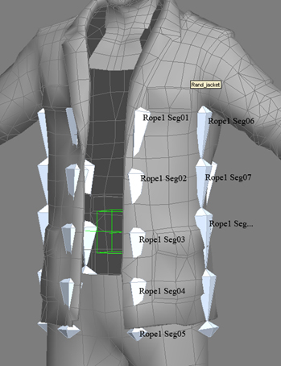
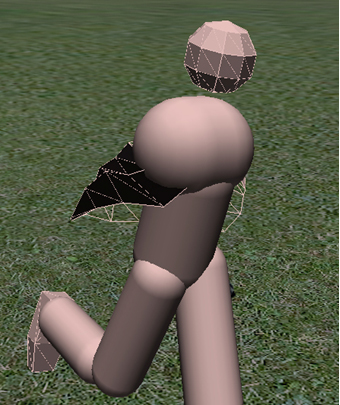

Обзор
Разделы
CRYENGINE поддерживает симуляцию ткани из костей и цепей. Он основан на настройке костей, созданной в различных пакетах программного обеспечения и затем экспортированной в движок. Если вы читали документацию по настройке веревки, ваше понимание этого должно быть намного лучше, поскольку эти две настройки очень похожи.
Пространства между вершинами преобразуются в треугольную сетку, которая автоматически генерируется движком. Эта сетка служит для обнаружения попадания пуль и генерирует силу, которая растягивает вершины ткани. Фактическое столкновение происходит только в точках, сгенерированных из экспортированных костей. Включение отладки физики в редакторе персонажей отобразит эти точки.
Примеры файлов
- chr_cloth.max: файл примера 3ds Max.
- chr_cloth.ma: файл примера Maya.
Общая настройка
Вот рекомендации по настройке ткани персонажа:
- Полотно имитирует пряди веревок. Создайте костяную цепочку для каждой пряди веревки.
- Каждая косточка в каждой пряди должна быть примерно одинаковой длины.
- Корневой узел веревочной цепи должен быть напрямую связан с физикализованной костью в иерархии.
- Число костей в цепочке должно быть не более чем на 1 кость больше или на 1 кость меньше количества костей в следующей или предыдущей цепочке.

- Кость должна быть названа следующим образом: «Веревка<номер> Сег<номер>».
- Номера сегментов должны состоять из двух цифр, например «Seg01», «Seg02» и т. д. Если количество моделируемых костей превышает три цифры, все кости должны быть названы трехзначными, например «Seg001», «Seg002» и т. д.
- Сегменты одной ткани должны иметь одинаковый номер «Веревка».
- Сегментам одной и той же ткани следует присваивать имена последовательно, начиная с «Seg01» — самой первой кости, которая будет моделироваться.
- Иерархия суставов должна идти сверху вниз, как в обычной костной цепи.
- Последняя кость, моделируемая в каждой нити, никогда не должна быть последней костью в иерархии нитей. Всегда нужна завершающая кость. Завершающая кость по-прежнему должна соответствовать соглашению об именах, принятому для костей-цепочек (т. е. Rope1 Seg04 на рисунке выше является последней костью, смоделированной в первой нити. Конечная кость — это Rope1 Seg05. Следующая цепочка продолжается, начиная с кости Rope1 Seg06.
- Чтобы ткань была в виде петли (то есть юбки), первая кость первой пряди должна иметь в названии слово «петля», например — Rope1 Seg01loop.
- Очень важно отметить, что файл .cdf должен быть создан из файла .chr. Это позволит провести глубокую настройку моделирования. Загрузите файл .chr в редактор символов и создайте новую привязку к кости с корнем веревки, установленным в качестве вложения, затем выберите поле внизу с надписью "PhysPropsAlive..."


Свойства
Вот список элементов управления свойствами ткани:
- MaxStretch — если сегмент растягивается больше, его длина возвращается к пределу.
- 0,05 означает, что каждый сегмент растянется не более чем на 5%. 0 отключает принудительное ограничение длины.
- Жесткость – жесткость «растяжения» (как у веревок, может начинаться от 10). Обратите внимание, что лучше настраивать жесткость, отключив ограничение длины, а затем включить его снова, если необходимо.
- Числа варьируются от 0 до 100+, но это очень экстремально и не рекомендуется. 10 – среднее значение.
- Демпфирование – глобальное демпфирование симуляции.
- 0-1 — слабо, 5 — сильно, но можно подняться и выше.
- AirResistance — устанавливает, насколько ткань подвержена влиянию ветра. Если нет ветра, эффект подобен затуханию.
- 0-1 – слабо, 1-2 – средне, жесткого верхнего предела нет.
- Толщина - радиус сфер столкновения для каждой вершины. Обратите внимание, что столкновения проверяются только в вершинах.
- Числа имеют размер, установленный в метрах. 0,05 — хорошая отправная точка. 0 отключает столкновение.
- StiffnessNorm — устойчивость к изгибу. Включайте только в том случае, если это необходимо для установки, в противном случае оставьте значение 0.
- Диапазоны аналогичны жесткости.
- StiffnessTang – устойчивость к сдвигу. Включайте только в том случае, если это необходимо для установки, в противном случае оставьте значение 0.
- Диапазоны аналогичны жесткости.
- StiffnessAnim — сила, с которой вершины ткани притягиваются к анимированным позициям. Обратите внимание, что все остальные жесткости указаны относительно исходной (по умолчанию) позы.
- 0-100, но жесткого ограничения нет.
- StiffnessDecayAnim — устанавливает, насколько уменьшается StiffnessAnim и масса вершин по краям ткани (прикрепленные части имеют полную жесткость). Также включает некоторые оптимизации Solver, поэтому, даже если вы не хотите затухания, желательно оставить его отличным от 0 (например, 0,01) для сложных моделей.
- 1-2 — это нормально, больше, если вы хотите, чтобы конец был светлее верха (обычно это необходимо только для очень long ткани.)
- DampingAnim — аналогично Damping, но гасит движение относительно персонажа, поэтому, вероятно, предпочтительнее глобального Damping. Однако он активен только тогда, когда StiffnessAnim не равен 0, поэтому, если вам нужен DampingAnim, но нет StiffnessAnim, используйте вместо этого очень низкое значение StiffnessAnim, отличное от 0, например 0,001.
- Диапазоны аналогичны демпфированию
- MaxDistAnim — максимальное отклонение каждой вершины от анимированной позы, в метрах (при нарушении положение вершины принудительно). 0 отключает эту функцию. обратите внимание, что на него также влияет StiffnessDecay, но обратным образом - поэтому затухание в 2,5 означает в 2,5 раза больший предел расстояния по краям.
- Числа задаются в метрах, но числа не должны быть слишком маленькими (0,01), поскольку разделение по времени может оказаться невозможным.
- MaxTimeStep — для детальных моделей может потребоваться меньший временной шаг, но его уменьшение делает ткань более дорогой (внутренне для ткани каждый кадр двигателя будет разделен на подшаги с этой длиной). обычно 0,02 является хорошим значением по умолчанию, а 0,01 должно быть достаточно даже для очень подробных. используйте t_FixedStep для тестирования движка с самой низкой целевой частотой кадров (обратите внимание, что вы можете использовать отрицательные значения, чтобы принудительно снизить фактическую частоту кадров до заданного значения вместо простого обновления объектов с большими временными шагами)
- Трение — для персонажей значения в районе 0,1–0,3 должны быть приемлемыми. Значения 1 или более сделают его довольно липким.
- CharacterSpace (0..1) — сочетание моделирования в пространстве символов (1) и глобальном пространстве (0). первый игнорирует движение персонажа в мире, поэтому полезно уменьшить эффект быстрых движений, но он делает ткань более «плавающей».
- MaxStretch — если сегмент растягивается больше, его длина возвращается к пределу.
Кроме того, вы можете использовать p_max_bone_vel cvar для ограничения скоростей, с которыми, по мнению физического решателя, движутся кости (и которые он таким образом пытается сопоставить). Если вы испытываете грубое поведение при быстрой анимации со значением по умолчанию, попробуйте уменьшить его до 3 или 4.
Начиная с SDK 3.6.8, также можно использовать ткань вершин (с теми же требованиями к настройке, что и для отдельного объекта ткани, которые представляют собой точную физикализацию сетки рендеринга и прикрепленные вершины с черным цветом вершин) во вложении кости .cgf.
Отладка
p_draw_helpers
Same as p_draw_helpers_num, but encoded in letters
Usage [Entity_Types]_[Helper_Types] - [t|s|r|R|l|i|g|a|y|e]_[g|c|b|l|t(#)]
Entity Types:
t - show terrain
s - show static entities
r - show sleeping rigid bodies
R - show active rigid bodies
l - show living entities
i - show independent entities
g - show triggers
a - show areas
y - show rays in RayWorldIntersection
e - show explosion occlusion maps
Helper Types
g - show geometry
c - show contact points
b - show bounding boxes
l - show tetrahedra lattices for breakable objects
j - show structural joints (will force translucency on the main geometry)
t(#) - show bounding volume trees up to the level #
f(#) - only show geometries with this bit flag set (multiple f's stack)
Example: p_draw_helpers larRis_g - show geometry for static, sleeping, active, independent entities and areas